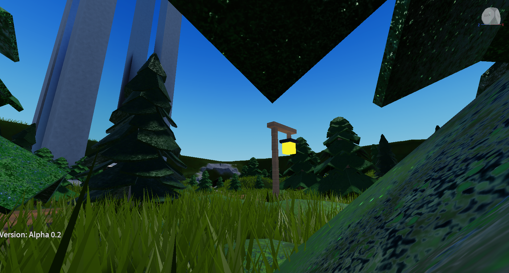
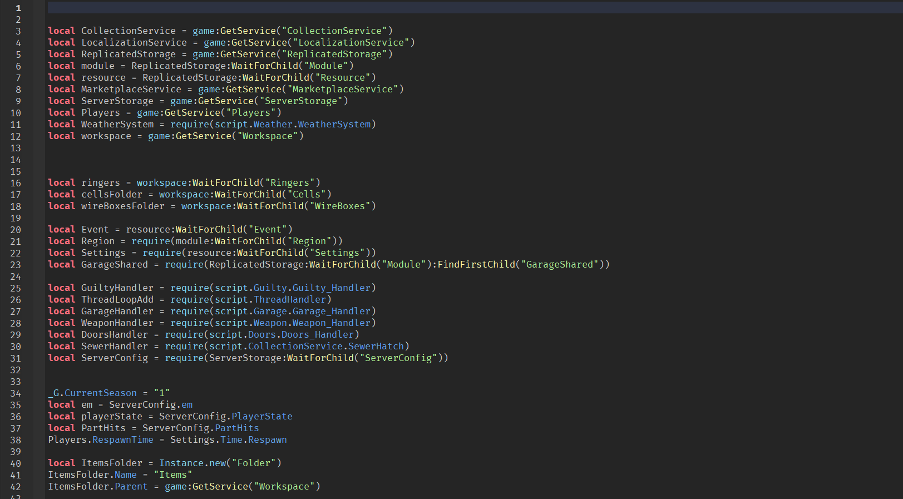
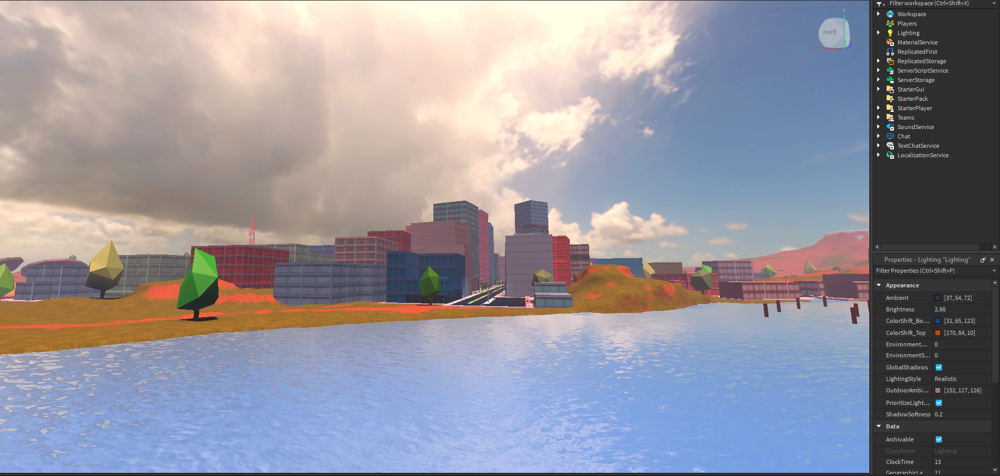

Game Development
I like to create games inside of Roblox, it's a hobby of mine which I like to do in my spare time.
I use Lua to create scripts for the games for them to operate. I also create many recreations
of popular games such as Jailbreak (it is allowed by the developers).
Being a game developer isn’t easy as a lot of bugs and glitches occur postponing a lot of things that
were promised to be added to the said game, but I never gave up and kept trying which shows I am
very determined.
This is for an upcoming horror game I am building/coding for a friend.
I created it inside of Roblox studio using the building tools that the software provides.
I am also helping code the game too using Lua(the programming language Roblox uses) to make
things work like jump scares and other scary stuff.

This is my code that I made for my jailbreak recreations. I scripted it using Lua
this was to create every bit such as the vehicles, robberies and even how the player moves like punching crawling etc
and even storing cash that the player gets out of the doing different tasks inside of the game.

This is the map that I created to be as accurate as ever, like the horror game i am
making, I used the different tools
that Roblox offers to recreate it 1:1.
this was things like editing the light which was hard
however a lot of different tools such as decompiling the game made
it possible for an accurate lighting to the original to be made.
